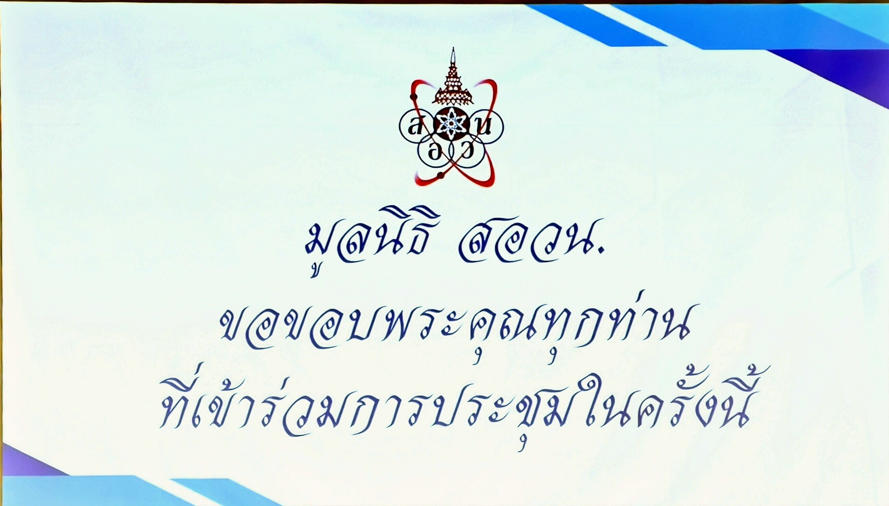

ข้อสอบคัดเลือกค่าย 1 สอวน.คอมพ์ ควรวัดใคร และวัดอะไรให้ตรงเป้าจริง
{kind=link}

บทความนี้อธิบายความเข้าใจที่มักคลาดเคลื่อนเกี่ยวกับข้อสอบคัดเลือกเข้าค่าย 1 สอวน.คอมพิวเตอร์ โดยเริ่มจากการย้ำว่าขอบเขตเนื้อหาถูกประกาศไว้อย่างชัดเจนบนเว็บไซต์อยู่แล้ว และถ้ามองเฉพาะช่วงก่อนค่าย 1 จริง ๆ สิ่งที่ต้องรู้ยังอยู่ในระดับพื้นฐานของโปรแกรมคอมพิวเตอร์ การเขียนโปรแกรม คณิตศาสตร์พื้นฐาน และโครงสร้างข้อมูลเพียงเล็กน้อย
แต่ประเด็นที่สำคัญกว่าการท่องเนื้อหาคือคำถามว่า เรากำลังคัดใครกันแน่ ถ้าเป้าคือเด็กที่เขียนโปรแกรมเป็น พร้อมไปเรียนต่อในค่าย และมีตรรกะทางคณิตศาสตร์พอใช้คิดได้ในรูปที่ computable ข้อสอบก็ควรสะท้อนเป้าหมายนั้นให้ตรง
บทความชี้ตรง ๆ ว่าโครงสร้างข้อสอบเดิมที่แบ่งคอมพ์ครึ่งหนึ่ง คณิตครึ่งหนึ่ง แม้จะชัดเจน แต่ในข้อสอบจริง 2-3 ปีย้อนหลัง คณิตยังหนักกว่า จนชวนให้ตั้งคำถามว่าระบบกำลังคัดเด็กสายไหนอยู่กันแน่ เพราะโจทย์คอมพ์ระดับก่อนค่าย 1 เองก็ยังวัด talent ได้ไม่สุด แต่ถ้าขยับไปคณิตยากมากก็จะกลายเป็นการคัดอีกสายหนึ่งไปเลย
Hybrid คือการเพิ่มโจทย์คอมพ์ และฝังคณิตไว้ใน computation
ข้อเสนอหลักของบทความคือแนวทาง Hybrid ที่ให้โจทย์คอมพ์มีสัดส่วนมากขึ้น แล้วแทรกคณิตเข้าไปในตัวโจทย์ แทนการเอาโจทย์คณิตมาแยกแก้หรือพิสูจน์ต่างหาก วิธีนี้ทำให้ยังคงตรรกะทางคณิตศาสตร์ไว้ แต่ย้ายจุดเน้นไปที่การคิดเป็นขั้นตอนและการออกแบบอัลกอริทึมในระดับที่เด็กควรพร้อมสำหรับค่าย
ในเชิงความยาก บทความอธิบายว่าโจทย์ที่ตั้งใจไว้ไม่ได้เกินระดับ A1-A2 ของ TOI-Zero ความท้าทายจึงไม่ได้อยู่ที่ syntax หรือเทคนิคสูง ๆ แต่อยู่ที่ logic ภายในโจทย์ และความสามารถในการแปลงปัญหาให้เป็น computation
ถ้าทำคอมพ์กันทั้งที ก็ควรบริหารด้วยข้อมูลด้วย
อีกประเด็นสำคัญคือการใช้ข้อมูลมาดูการเข้าถึงโอกาสของเด็กแต่ละพื้นที่ บทความยกกรณีพื้นที่ที่อยู่ห่างมหาวิทยาลัยใหญ่และศูนย์ค่าย 2 หลายร้อยกิโลเมตร จนนำไปสู่การคุยกับหน่วยงานที่เกี่ยวข้องและการตั้งศูนย์ใหม่เพิ่มในปี 2570
มุมนี้ทำให้บทความไม่ได้พูดแค่เรื่องข้อสอบ แต่พูดถึงการออกแบบระบบ talent development ทั้งระบบ ตั้งแต่คลาสออนไลน์ ระบบตรวจการบ้านอัตโนมัติ ไปจนถึงแรงผลักจากโรงเรียนและครูในพื้นที่ เพื่อให้โอกาสไม่หยุดอยู่แค่ในพื้นที่ที่พร้อมอยู่แล้ว